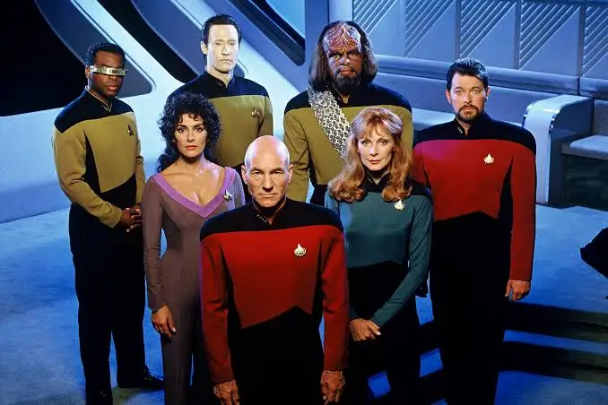

Comfort Zone
Hakkımda

Merhaba. Ben Comfort Zone! Ankara'da yaşıyorum. Bilimkurgu izlemeyi ve okumayı severim. Tam bir Star Trek hayranıyım! Web geliştirme ile ilgileniyorum. Kodluyoruz.org ve Patika.dev'in bu eğitim serisi sayesinde harika şeyler öğrendim ve öğrenmeye devam ediyorum! Siz de aramıza katılın!
İlgi Alanlarım
-
Film

-
Uzay Yolu: Yeni Nesil (Star Trek: The Next Generation) Gene Roddenberry tarafından yaratılmış olan kurgusal Uzay Yolu evreninde geçen bir bilimkurgu dizisidir. Türkiye'de 1990-1997 yılları arasında Star TV'de yayınlanmıştır.
-
Pervasız James T. Kirk, babasının mirasına sahip çıkmaya çalışırken, gelecekten gelen intikamcı bir Romulan, Federasyon'u tek tek yok etmek için kara delikler yaratırken, Bay Spock onu kontrol altında tutmaya çalışmaktadır.
-
Kitap
-
Dizi